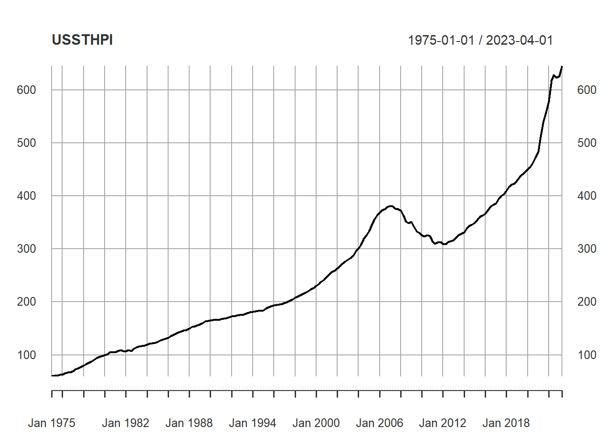

Chapter 2 Stories and Visuals
Stories make data and numbers memorable. Stories are everywhere. When you think about the context of the data, stories evolve naturally. How does the data connect to you, your friends and family, the work environment or society as a whole.
2.1 Facts
A good story is based on facts and reliable sources. When evaluating facts, it's important to consider the source of the information and the evidence supporting it. According to OECD data on part-time employment rate (2021):5
36 % of women worked part-time in Germany whereas only 10 % of men did.
2.2 Visualization
Good data visualization helps to convey complex information in a way that is easily understandable and accessible to a wide range of people. By presenting data in a visually appealing and intuitive way, it can help people to identify patterns, trends, and relationships that might not be immediately apparent from a simple data table or text-based analysis.

Why not just tell the numbers as is? An important aspect of data science is to communicate information clearly and efficiently. Complex data is made more accessible.
Data visualization reveals the data.
2.3 Telling a story
Data storytelling is the practice of using data and visuals to communicate a narrative or message to an audience. It involves combining data, analysis, and storytelling techniques to create a compelling and engaging narrative that can inform, persuade, and inspire action.
Data storytelling is necessary and good because it helps people make sense of complex data and information. By presenting data in a clear and visually appealing way, data storytelling can help people understand the meaning behind the numbers, identify patterns and trends, and gain insights into important issues and problems.
By weaving a compelling narrative around the data, we can help our audience to understand the insights that we have discovered and why they matter. A data story can also help to make the data more memorable and emotionally resonant, which can help to further engage our audience and increase their interest in the subject matter.
Once upon a time ...
in a land not too far away, there were two siblings named Alex and Jamie. Alex and Jamie were very close in age and grew up in the same household with the same parents, but they had very different personalities and interests.
As they reached adulthood, Alex decided to pursue a career in finance and secured a full-time job at a large investment bank. Jamie, on the other hand, decided to focus on their passion for art and took on a part-time job as a freelance graphic designer while also working on personal creative projects.
Over time, Alex and Jamie noticed a stark difference in the way their work and career choices were perceived by society. Alex was praised for their ambition and dedication to their career, while Jamie was often questioned or criticized for not having a full-time job with benefits and stability.
Alex was also more likely to receive promotions and higher salaries, while Jamie struggled to make ends meet and was sometimes overlooked for opportunities because of their part-time status.
It became clear to Alex and Jamie that there was a gendered expectation for men to pursue full-time, high-paying careers while women were expected to prioritize caregiving or creative pursuits over financial stability.
Despite these societal expectations, Alex and Jamie continued to pursue their individual paths and support each other's choices. They hoped that someday, society would recognize the value and importance of all types of work and careers, regardless of gender or perceived societal norms.
2.4 Man's best friend
Humans love dogs. Dogs were domesticated by humans over 15,000 years ago. They can be perfect companions for singles, for couples for families. They differ in behavior, longevity and appetite. Figure 2.1 combines 6 dog characteristics in a dog score and compares this with the popularity of different breads. From this scatterplot the authors define four categories of dog breads, e.g. the hot dogs and overlooked treasures (similar to a BCG matrix).
.](https://infobeautiful4.s3.amazonaws.com/2014/11/IIB_Best-In-Show_1276x2.png)
Figure 2.1: The Ultimate Dog Data by informationisbeautiful.
On the one hand, this is an awesome chart that transforms a huge data table in one graph, a scatter plot on two dimensions lightened by the individual dog icons for each data point. On the other hand, this graph is so complex and does not offer a major takeaway. Looking more closely to the graph, raises more questions then the graph answers, i.e. how was grooming and appetite measured? How are the 6 factors combined in the data score? When you look even more closely, you notice the easter egg.6
2.5 Less is more
Figure 2.1 is an awesome data aggregate. Still, "less is more" in data visualization because too much information or visual clutter can overwhelm and confuse the audience, making it harder for them to understand the key insights and trends in the data. The complex scatterplot demands a lot of attention.
Follow the slide presentation:
The concept of data-ink ratio was introduced by data visualization expert Edward Tufte. It refers to the proportion of ink or pixels used to represent actual data in a visualization, as opposed to non-data elements like gridlines, borders, or labels.
The reason why we should care about data-ink ratio is that it directly affects the clarity and effectiveness of the visualization. The more ink or pixels we use to represent non-data elements, the less space we have to represent actual data, which can make it harder for the audience to discern the insights and trends in the data.
Definition
The data-ink ratio is the proportion of Ink that is used to present actual data compared to the total amount of ink (or pixels) used in the entire display. Good graphics should include only data-Ink. Non-Data-Ink is to be deleted everywhere where possible.
2.6 Grammar of Graphics
ggplot2 is a system for declaratively creating graphics, based on The Grammar of Graphics. You provide the data, tell ggplot2 how to map variables to aesthetics, what graphical primitives to use, and it takes care of the details. ggplot2 is now over 10 years old and is used by hundreds of thousands of people to make millions of plots.
Search OECD database https://stats.oecd.org/index.aspx?queryid=54746#↩︎
The frightened cat among all dogs.↩︎